Ubuntu 入门操作指南
作者：TeliuTe 来源：基础教程网
四十五、Pitivi 视频编辑器 返回目录 下一课使用它，您可以编辑、转换、剪裁视频文件；
1、Pitivi 视频编辑器
1）在软件中心或新立得中搜索安装 pitivi，详细操作请参阅 第10课 或 第15课；
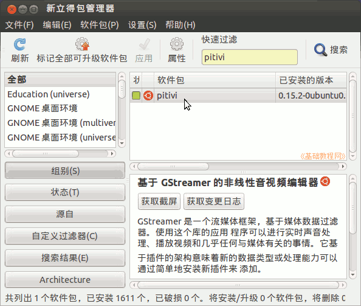
2）点击主按钮，在搜索中输入 pitivi ，打开程序，或者依次点“主按钮、所有程序、过滤结果、媒体、Pitivi 视频编辑器”；
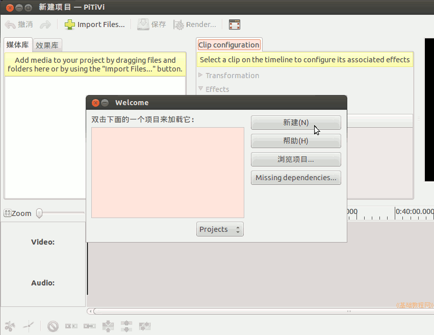
3）先把出来的向导对话框关闭了，打开的窗口分为三部分，左侧是素材片段窗口，中间是效果窗口，右侧是播放窗口，下边是时间轴；
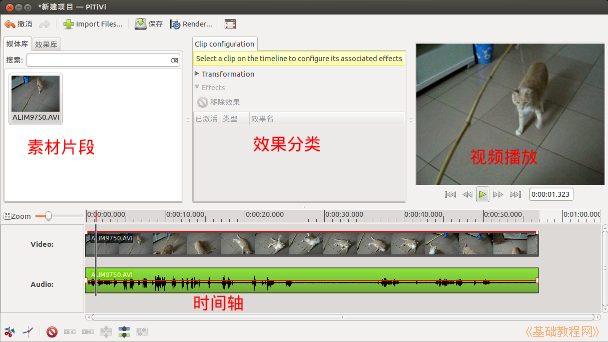
4）点工具栏上的导入片段按钮“Import file..”，在出来的对话框中选择要处理的视频，本课 images 文件夹中有一个素材：Tarzan.ogv；
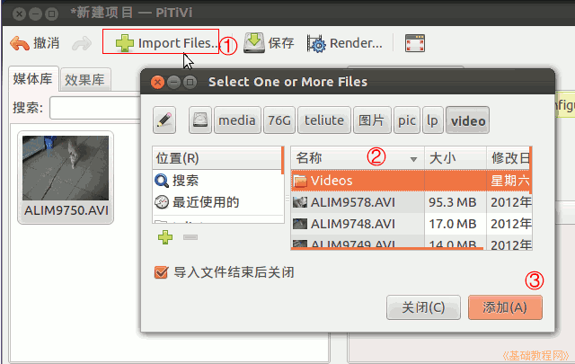
5）打开的视频，放在左上边素材片段窗口中，可以导入多个视频；
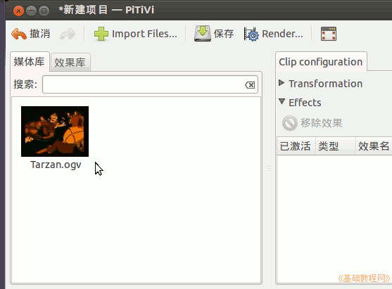
6）把上边的视频，拖动到下边的时间轴里，错了就点工具栏上的“撤消”；
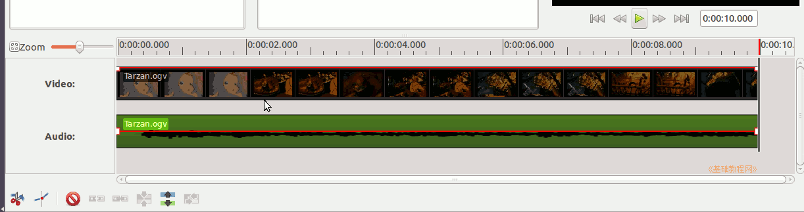
7）在时间轴上点击一下，红色指针指向那儿，上边显示了当前的时间；
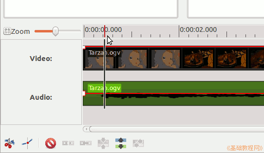
8）点左下角的剪刀按钮，把视频分割成两部分；
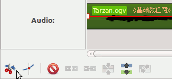
9）在时间轴点击后半部分视频选中它，点下边的删除按钮，或者点菜单“时间轴 - 删除”，只留下前半段视频；
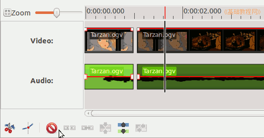
选中前边的一段，在右边播放窗口中，点播放按钮，看一下视频效果；
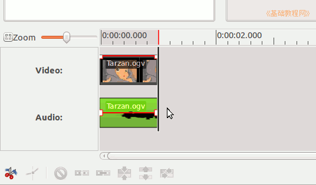
2、渲染视频
1）点工具栏上的“渲染项目”按钮，准备导出视频文件；
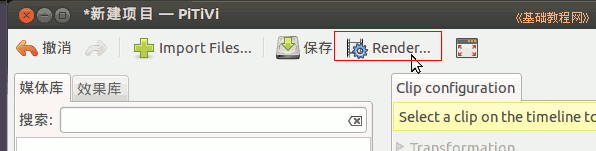
2）在出来的对话框中，设置存储视频的位置、文件名和视频格式类型，默认是 Ogg类型；
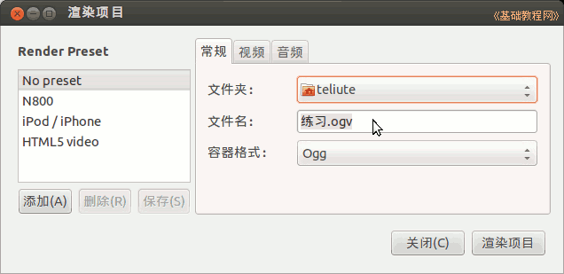
3）点上边的“视频”标签，设置视频的尺寸和帧速率；
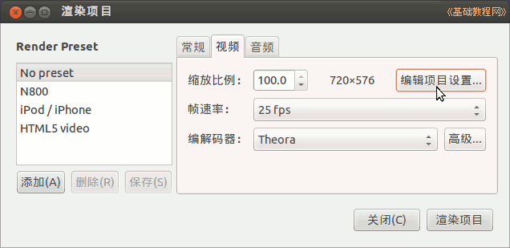
4）再点“音频”标签，设置音频的参数选项；
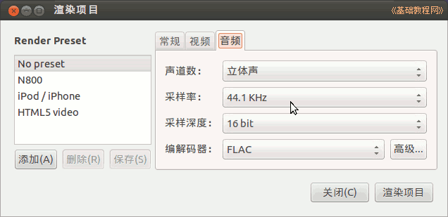
5）点“渲染项目”按钮开始渲染，这需要较长的时间，取决于电脑速度；
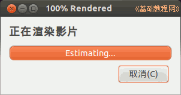
6）完成以后点工具栏上的“保存”按钮，保存项目编辑文件，以便下次接着使用；
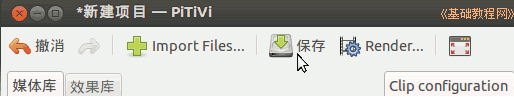
7）下边的编辑栏上还有一个拆分图像和音频的按钮，将视频中的图像和音频分解开；
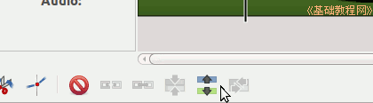
本节学习了Pitivi 视频编辑器的基础知识，如果你成功地完成了练习，请继续学习下一课内容；
本教程由86团学校TeliuTe制作|著作权所有
基础教程网：http://teliute.org/
美丽的校园……
转载和引用本站内容，请保留版权信息和本站链接。